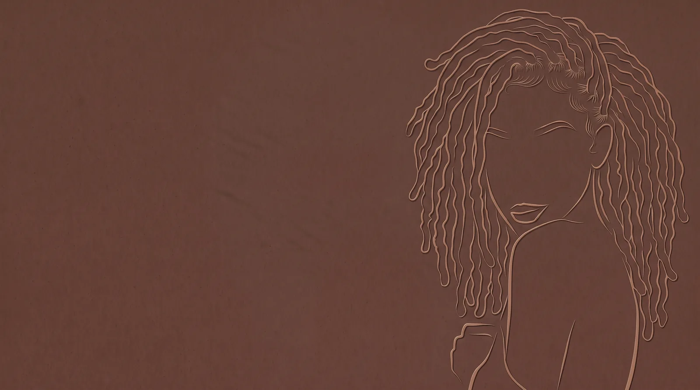
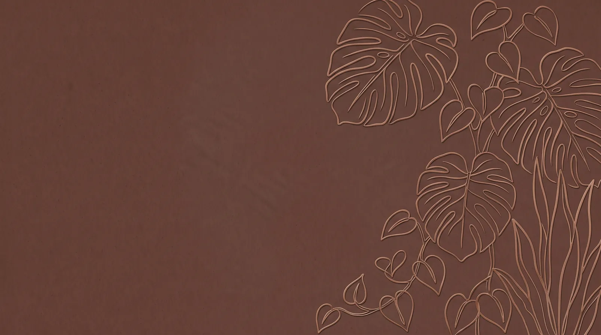
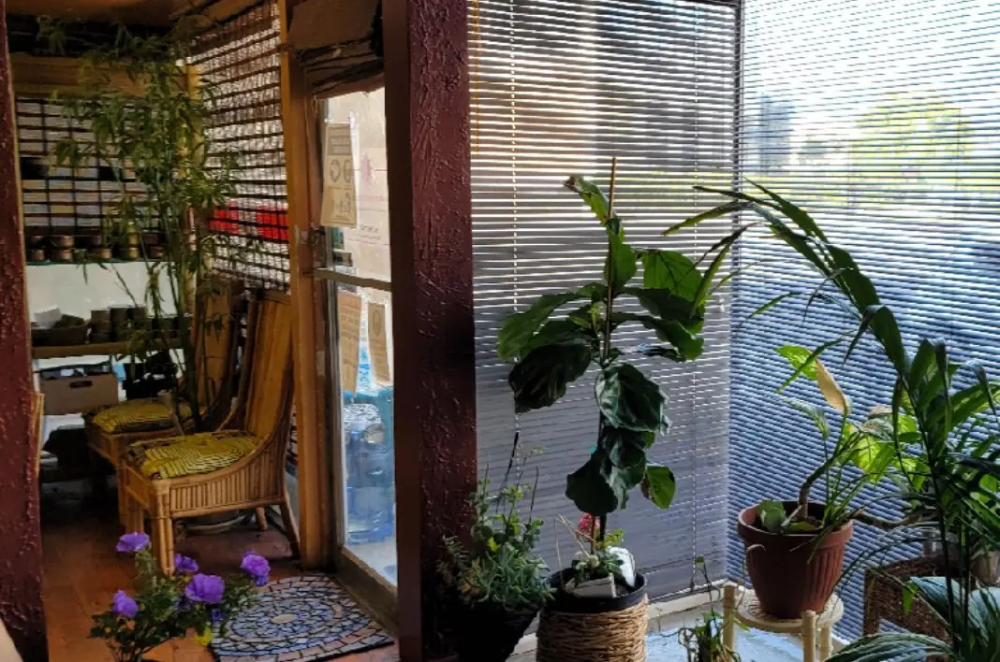

Stage i. Starter twist
Consultation

Thirty minutes to look at your hair and talk through the look you want. Bring pictures. Every install starts here.
Book consultation on Booksy4142 N Business St, Long Beach, CA 90807
Bixby Knolls, by appointment

Natural hair salon · Bixby Knolls, Long Beach
Danyette Thomas and the Locs Myth studio handle the whole journey under one roof: consultations, installs, maintenance, repair, style and color.
Under one roof
Clients write that it is great work "every time" and the best "as always." The menu is built to keep that going at every stage: a $25 consultation to plan, installs from traditional to micro locs, interlocking and palm-roll maintenance, reconstruction and treatments when locs need care, then styles and color.
Walk through the loc journeyServices and prices
The loc journey
From a starter twist to long, matured locs: what happens at each stage, and the Booksy services that go with it.
Stage i. Starter twist
Thirty minutes to look at your hair and talk through the look you want. Bring pictures. Every install starts here.
Book consultation on BooksyStage ii. Budding
Traditional locs, micro locs, Sisterlock installation or loc extensions. Come washed and comfortable; snacks are welcome and breaks are part of the plan.
Book installation on BooksyStage iii. Teen
Interlocking or palm-roll retwists keep new growth neat. The menu is built around an 8-week maintenance schedule.
Book maintenance on BooksyStage iv. Mature
Reconstruction for weak or damaged locs, plus treatments for build-up, dryness and breakage.
Book repair and restore on BooksyStage v. Long matured
Barrels, lobster, plaits, twists and curls, then color from a root touch-up to custom ombre and two-tone work.
Book style and color on BooksySwipe through the five stages. Prices from Booksy, October 12, 2026. Final price confirmed at booking.
The work

The studio
“Thank you for trusting me with your crown.”
Danyette Thomas, replying to a client on Booksy
Danyette Thomas runs Locs Myth at Natural Essence from a plant-filled studio on North Business Street in Bixby Knolls. Clients describe the space as calm and beautifully styled, and her consultations as kind, welcoming and full of information.

Client words
A beautifully styled, calm salon, and Danyette shared so much helpful information while maintaining my Sisterlocks.
“Great work every time.”
Tiah · Booksy reviewThe consultation was great. Danyette was kind, welcoming and knowledgeable, and I'm excited for my installation.
Alexis · Booksy review, paraphrasedAmazing hospitality and customer service, with lots of helpful information. Loved my first visit.
Alanecia · Booksy review, paraphrased“The best as always.”
Michelle · Booksy review, Sisterlocks maintenanceI've been coming for years. Good energy and good attitudes; I recommend it.
Jaz Z. · Yelp review, paraphrasedQuestions
Book online through Booksy, which shows live availability. You can also call the salon at (562) 988-5787.
Yes, for installs. Booksy notes: "For installation, a consultation and deposit required before appointment is confirmed." The consultation is $25 for 30 minutes, and you are asked to bring pictures.
On Booksy, Loc Installation (Traditional) starts from $200, Micro Loc Installation from $950, and Sisterlock Installation from $1,250 for hair up to 4 inches, plus $95 per inch after that. Your exact price is confirmed at consultation.
The salon works by appointment. The live calendar on Booksy shows open times; call (562) 988-5787 with questions.
The menu is built around an 8-week maintenance schedule. Palm-roll retwists add $10 to $20 past 8 weeks, and an Over due Add-on ($75) applies at 2 months past due.
4142 N Business St, Long Beach, CA 90807, in the Bixby Knolls neighborhood of North Long Beach. Open in Google Maps.

Book
Thirty minutes, your hair and the look you want. Bring pictures. Installs need a consultation and deposit before the appointment is confirmed.